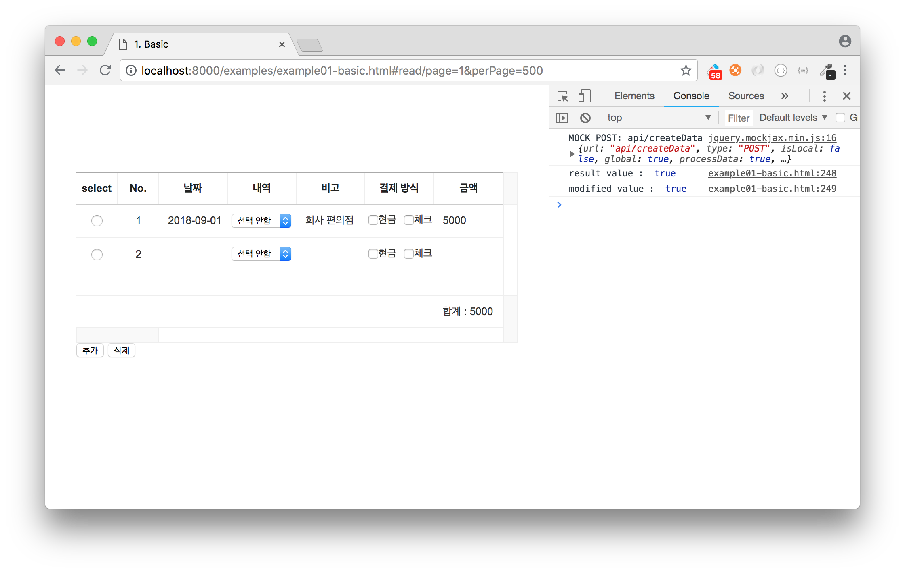
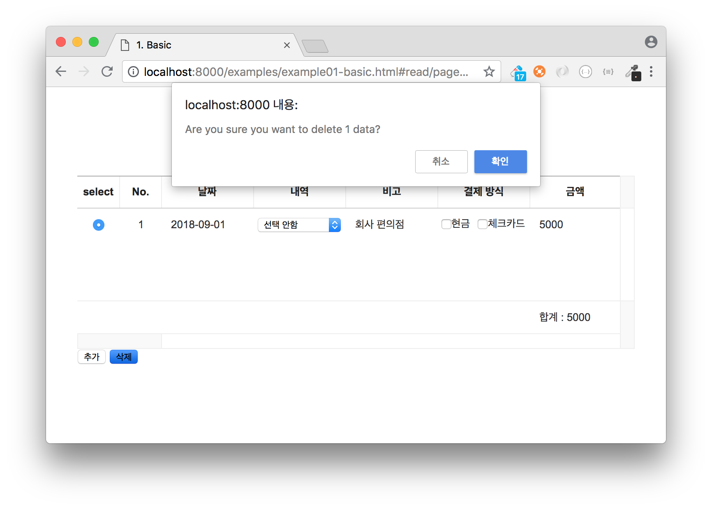

8. 서버 연동하기 (심화)¶
Net을 사용하여 데이터를 추가(Create), 수정(Update), 삭제(Delete) 동작을 처리할 수 있습니다.
이 세 가지 동작은 그리드의 getAddOn API가 반환한 net 인스턴스를 사용하여 처리되며, 이 net 인스턴스의 request API를 호출하여 서버와 통신합니다.
이번 장에서는 데이터를 수정하는 동작(Update) 을 구현해봅니다.
8.1. Net 활성화하기¶
먼저, 데이터를 수정한 후 호출하는 서버 API 정보를 추가합니다.
읽기(readData) 동작을 처리했던 것과 같이 데이터값이 수정되었을 때 호출되는 API URL을 설정합니다.
grid.use('Net', {
...
api: {
...
updateData: 'api/updateData'
}
});
8.2. UI 버튼 추가하기¶
버튼을 클릭하면 수정된 행을 가져와서 서버 API로 호출할 수 있도록 src/index.html 파일에 태그를 추가해봅니다.
<button id="sync">동기화</button>
src/index.js 파일로 돌아와 버튼에 클릭 이벤트를 바인딩하고 이벤트 발생 시 호출되는 핸들러 함수를 추가합니다.
function syncServer() {}
document.getElementById('sync').addEventListener('click', syncServer);
8.3. 서버 요청하기¶
앞서 작성한 syncServer 이벤트 핸들러 함수를 완성해봅니다.
다음과 net.request API를 호출하면 위에서 설정한 updateData 에 설정된 API URL을 호출하게 됩니다.
let net;
function syncServer() {
net = grid.getAddOn('Net');
net.request('updateData', {
checkedOnly: false
});
}
8.4. 응답 결과 처리하기¶
그리드에서는 커스텀 이벤트 를 사용하여 어떤 동작의 결과를 처리할 수 있습니다.
가계부 예제에서는 response 이벤트를 사용하여 서버에서 응답이 정상적으로 들어왔을 때 결과를 출력해봅니다.
grid.on('response', ev => {
const {
result,
data
} = ev.responseData;
console.log('result : ', result);
console.log('modifyType : ', data);
});
8.5. 결과 화면¶
콘솔 실행 결과)
